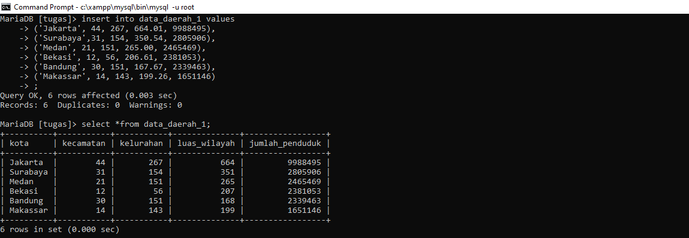
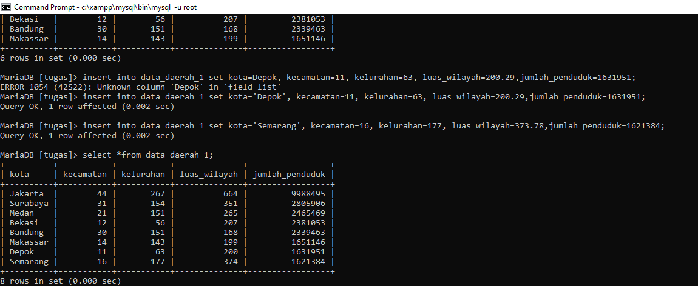
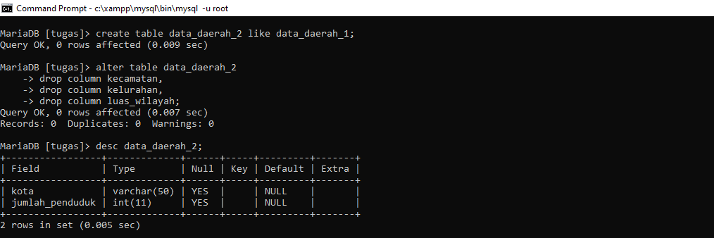
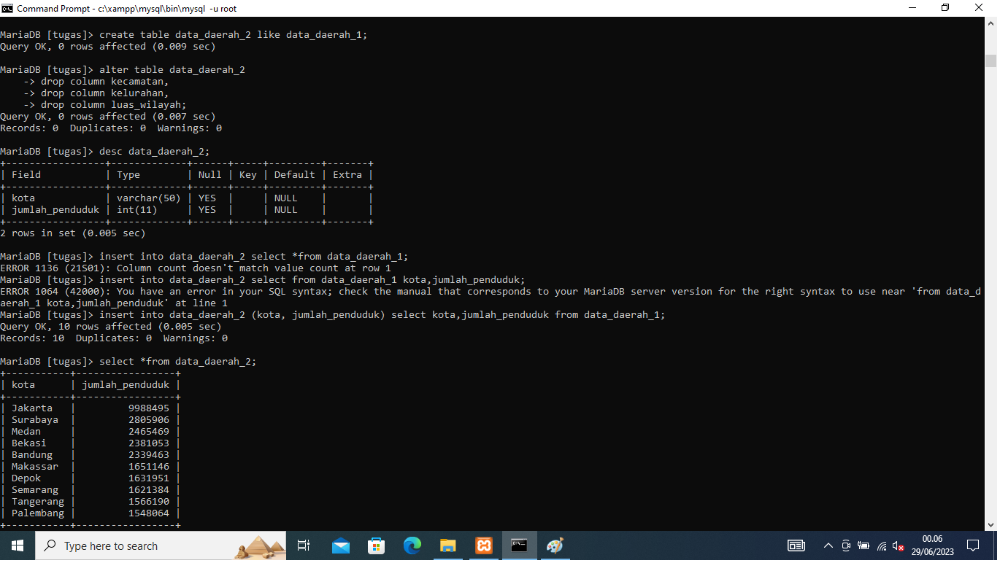

Tugas 7 MySQL
1.Buatlah struktur tabel yang akan menampung data-data diatas (CREATE TABLE). Kali ini saya tidak akan membatasi nama tabel, nama kolom maupun tipe datanya. Silahkan teman-teman berkreasi sendiri.
2.Input 8 kota pertama menggunakan query INSERT ... VALUES, bisa menginputnya satu per satu (satu query INSERT untuk setiap baris), atau sekaligus dalam satu query INSERT.

3.Input 2 kota terakhir menggunakan query INSERT ... SET.

4.Buat tabel kedua dengan menggunakan struktur yang sama dengan tabel pertama. Artinya, akan ada 2 tabel: Tabel pertama yang sudah berisi data (yang kita buat berdasarkan soal 1 - 3), dan tabel kedua yang belum berisi data. Struktur tabel pertama dan kedua ini sama persis, dimana sama-sama terdiri dari 5 kolom.
5.Ubah tabel kedua, hapus kolom Kecamatan, Kelurahan dan Luas Wilayah. Sehingga tabel kedua hanya berisi 2 kolom saja: Nama Kota dan Jumlah Penduduk.

6.Input tabel kedua dengan data yang diambil dari tabel pertama. Disini gunakan query INSERT ... SELECT. Perhatikan bahwa jumlah kolom di tabel kedua hanya tinggal 2 buah: Nama Kota dan Jumlah Penduduk. Struktur kolom ini sudah tidak sama dengan jumlah kolom dari tabel pertama.
